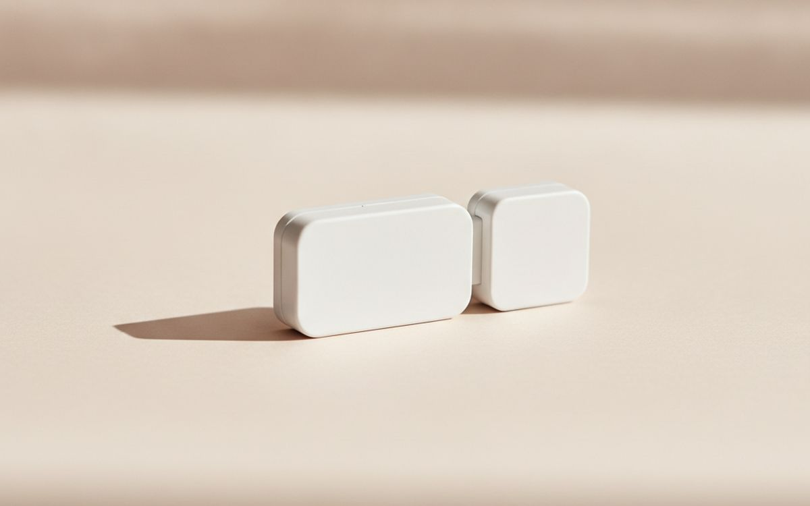
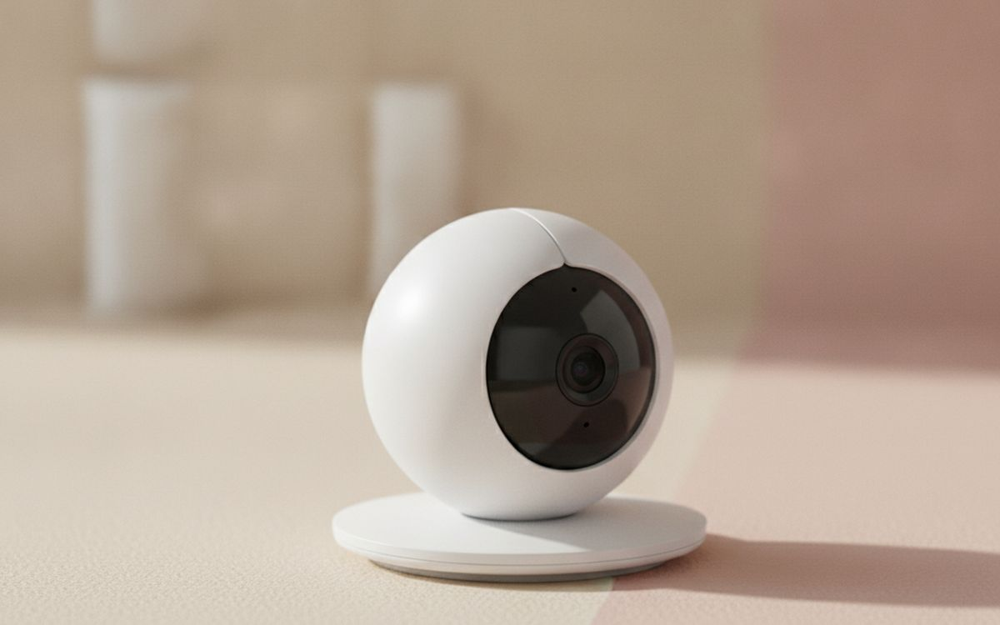
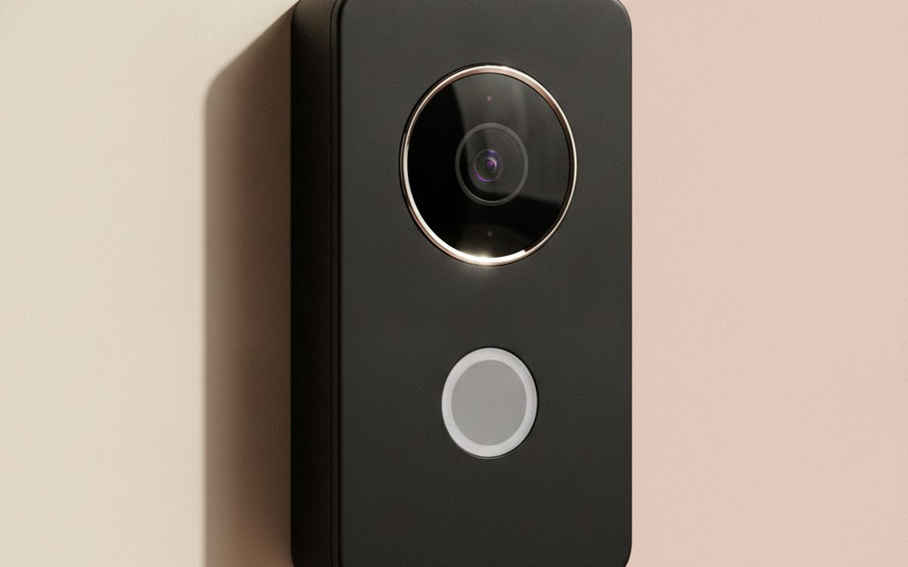
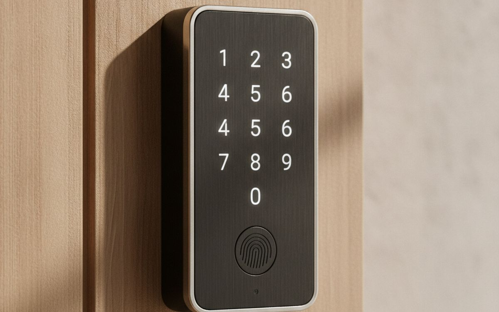
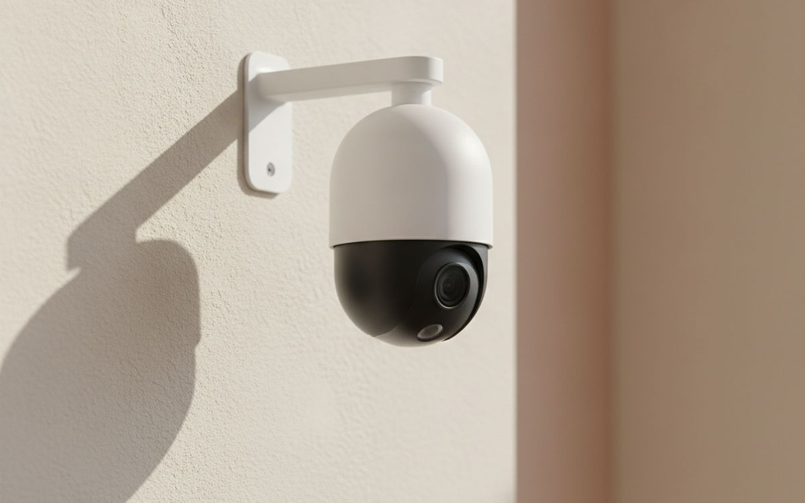
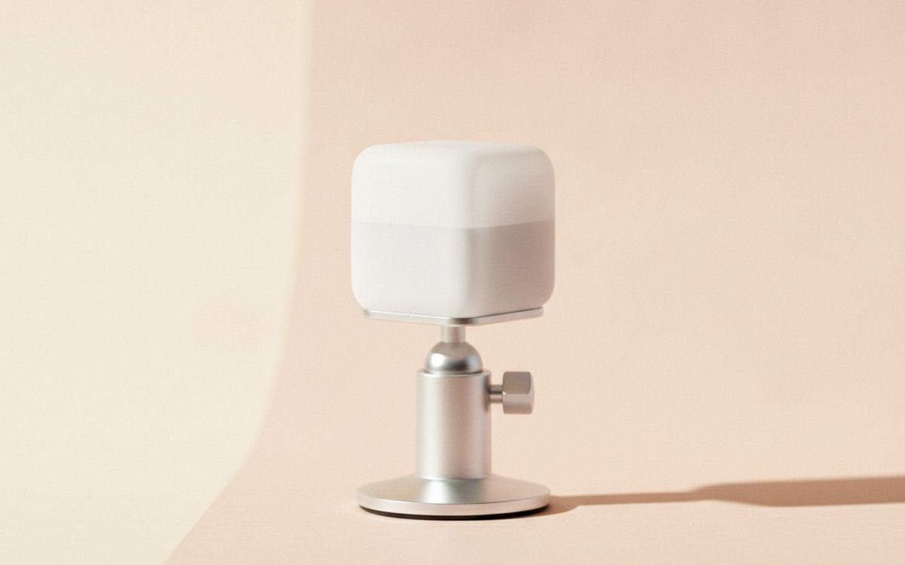
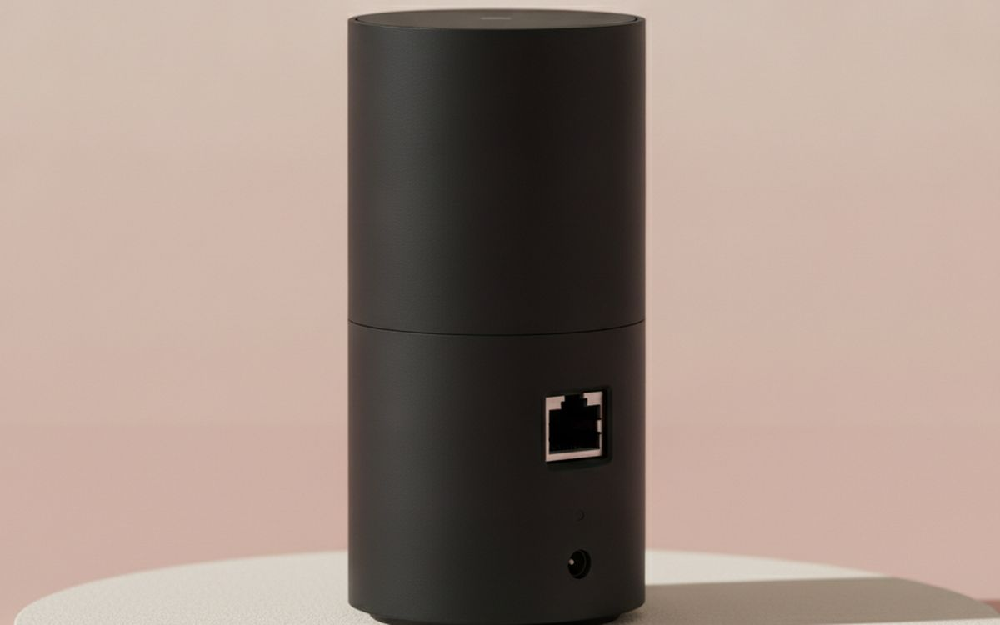
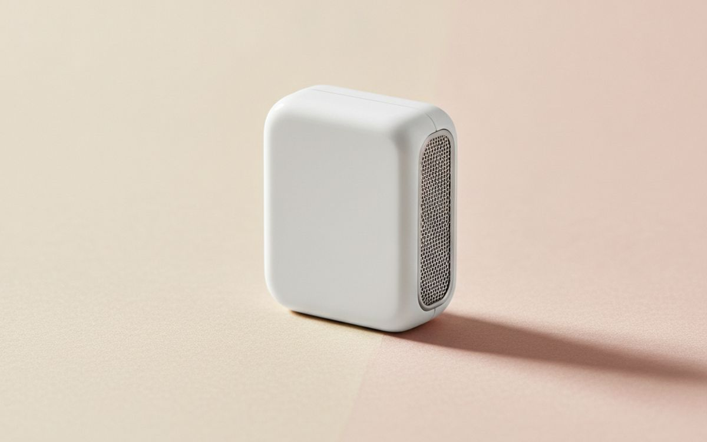
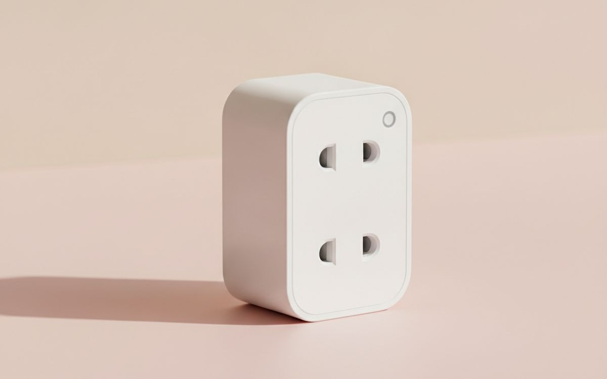
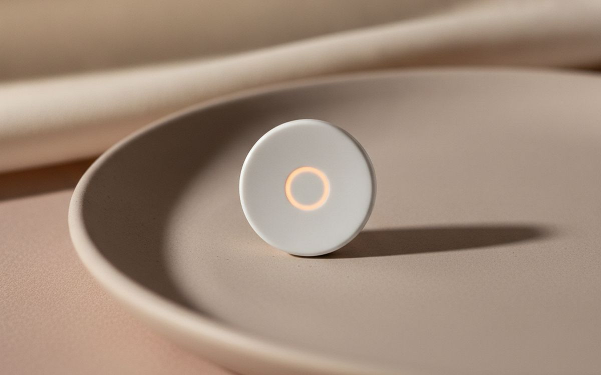

אבטחת בית נתפסת לעתים קרובות כפתרון מקיף, אך היא מיועדת בדרך כלל להרתיע פורצים מזדמנים או לספק ראיות לאחר אירוע. היא כמעט ולא מונעת פריצות נחושות. המרכיבים העיקריים הם מצלמות, חיישני דלתות וחלונות, ומנעולים חכמים. לכל אחד מאלה יש סט משלו של פשרות, במיוחד בכל הנוגע לפרטיות ועלויות שוטפות. אל תצפו שמערכת חכמה תחליף ערנות בסיסית או אמצעי הרתעה פיזיים כמו דלתות חזקות, מנעולים חזקים ותאורת חוץ טובה.
המלכודת הנפוצה ביותר באבטחת בית היא מודל המנויים. מכשירים רבים מציעים פונקציונליות מוגבלת בלבד ללא תשלום חודשי, ודוחפים משתמשים להוצאה חוזרת. תכונות כמו אחסון בענן של צילומי מצלמה, זיהוי תנועה מתקדם וניטור מקצועי נמצאים לעתים קרובות מאחורי חומת תשלום. שקלו האם התכונות ה"חכמות" לכאורה באמת שוות את העלות השוטפת, או שמא פתרון מקומי פשוט יותר עשוי להיות מתאים יותר. הנתונים שלכם, במיוחד צילומי מצלמה, נמצאים לעתים קרובות בשרתים של החברה, מה שמעלה שאלות לגבי מי יכול לגשת אליהם ולכמה זמן.
בקצרה
Aqara Contact Sensor P2
דעו מתי דלתות נפתחות
גילוי נאות. הקישורים בעמוד הזה הם קישורי שותפים. אם תקנו דרכם אנחנו עשויים להרוויח עמלה, בלי תוספת עלות לכם. זה לא משפיע על מה שנכנס לרשימה או על הסדר שלו.
איך בחרנו
חיפשנו מוצרי אבטחת בית זמינים באופן נרחב הידועים באמינותם ופונקציונליותם הברורה. מדריך זה מתמקד במכשירים המציעים איזון טוב של תכונות במחירם, תוך הכרה במגבלותיהם והשלכות הפרטיות הנלוות. שקלנו במיוחד מוצרים המספקים אפשרויות לאחסון נתונים מקומי או בעלי מדיניות שקופה בנוגע לטיפול בנתונים. אלו אינם סקירות מעשיות. המלצותינו מבוססות על מידע זמין לציבור וחוויות משתמש נפוצות.
השוואה מהירה
המחירים הם הערכה נכון לזמן הכתיבה ומשתנים לעיתים קרובות.
הבחירות

01 · דעו מתי דלתות נפתחותAqara Contact Sensor P2
חיישן קטן זה מזהה אם דלת או חלון פתוחים או סגורים באמצעות מגע מגנטי, ומשמש כקו הגנה ראשון חיוני. זהו רכיב בסיסי לכל מערך אבטחה ביתי, המספק התראות מיידיות כאשר נקודת כניסה נפרצת. דגם P2 מציע קישוריות באמצעות Zigbee או Thread, המספקת גמישות לשילוב במערכות בית חכם שונות. הוא אכן דורש רכזת Aqara או נתב גבול Thread תואם כדי לפעול כראוי, מה שמאפשר עיבוד מקומי של התראות לעדכוני סטטוס ללא תלות מתמדת בשירותי ענן חיצוניים. גישה זו ממזערת את הנתונים היוצאים מרשת הבית שלכם. ניתן להגדיר התראות כדי לשלוח הודעות לטלפון שלכם, והחיישן יכול גם להפעיל פעולות אוטומטיות אחרות בבית חכם, כגון הדלקת אורות מסוימים או הפעלת סירנה מקומית. מכשיר זה מציע שכבת זיהוי פשוטה ויעילה לנקודות כניסה רגישות, התורמת לאסטרטגיית אבטחה חזקה.
$25-40על מה מוותרים: דורש רכזת תואמת
בעד
- זיהוי פתיחה/סגירה אמין
- תומך בשליטה דרך רכזת מקומית
- חיי סוללה ארוכים
נגד
- דורש רכזת תואמת
- מוגבל לזיהוי נקודות כניסה

02 · מצלמה עם אחסון מקומיEufy SoloCam C24
ה-Eufy SoloCam C24 היא מצלמת פנים ברזולוציית 2K המיועדת לניטור פשוט ללא מנוי חובה. תכונה מרכזית היא יכולת האחסון המקומי שלה באמצעות כרטיס microSD, מה שאומר שהקלטות הווידאו שלכם נשמרות ברשת הביתית שלכם. זה מפחית משמעותית חששות פרטיות הקשורים בדרך כלל לשירותי אחסון מבוססי ענן שמתחרים רבים מסתמכים עליהם, ודוחפים אתכם לעלויות חודשיות חוזרות עבור פונקציונליות השמעה בסיסית. המצלמה כוללת זיהוי תנועה חזק ומציעה תקשורת שמע דו-כיוונית. תוכלו לצפות בקלות בשידור החי ולגשת לקליפים מוקלטים ישירות דרך אפליקציית Eufy בסמארטפון שלכם. בעוד לדגם זה חסרות יכולות פנורמה והטיה, עדשת הזווית הרחבה הקבועה שלו מספקת בדרך כלל כיסוי מספק לרוב החדרים הפנימיים. ההתקנה פשוטה יחסית, והיא מתחברת ישירות לרשת ה-Wi-Fi הביתית שלכם. מצלמה זו בולטת כאופציה מעשית לשמירה על מידה של פרטיות תוך הוספת אבטחה.
$40-60על מה מוותרים: אין פנורמה/הטיה
בעד
- אין מנוי חובה
- אחסון מקומי בכרטיס microSD
- רזולוציית וידאו 2K
נגד
- אין פנורמה/הטיה
- תלויה באפליקציית Eufy ובשרתים עבור תכונות מסוימות

03 · ראו מי בדלתEufy Video Doorbell 2K (Wired)
פעמון הדלת הווידאו החוטי הזה מבית Eufy מספק רזולוציית 2K ושדה ראייה רחב, ומספק צילומים ברורים של פעילויות מפתן הדלת שלכם. יתרון עיקרי, בהתאם לגישת Eufy, הוא הדגש שלה על אחסון מקומי. הוא משתמש ב-4GB של אחסון מובנה כדי לשמור הקלטות ישירות על המכשיר, מה שמבטל את הצורך במנויים כפויים רק כדי לגשת להיסטוריית הווידאו שלכם. הפעמון דורש חיווט פעמון קיים במתח נמוך לצורך חשמל, מה שמבטיח פעולה רציפה ללא צורך בהחלפת סוללות או טעינה תקופתית. תכונות עיקריות כוללות זיהוי תנועה אמין, אלגוריתמים מתקדמים לזיהוי אדם להפחתת התראות שווא, ושמע דו-כיווני, המאפשר לכם לתקשר עם מבקרים מרחוק דרך הסמארטפון שלכם. בעוד שנתוני הווידאו נשארים מקומיים, האפליקציה ושירותי התראות מסוימים עדיין מסתמכים על תקשורת עם שרתי הענן של Eufy. מערך זה מציע איזון של תכונות חכמות עם דגש חזק יותר על טיפול בנתונים מקומי.
$150-200על מה מוותרים: דורש חיווט פעמון קיים
בעד
- אחסון וידאו מקומי
- רזולוציית 2K גבוהה
- אין סוללה לטעינה
נגד
- דורש חיווט פעמון קיים
- לא מבודד לחלוטין משירותי ענן

04 · גישה עם לוח מקשים, תמיכה ב-HomeKitSchlage Encode Plus
ה-Schlage Encode Plus הוא מנעול בריח חכם המציע מספר דרכים נוחות לפתוח את הדלת שלכם. ניתן להשתמש במפתח פיזי מסורתי, בלוח מקשים עם מסך מגע להזנת קודים, או למנף את Apple HomeKit באמצעות NFC עם ה-Apple Watch או האייפון שלכם. מנעול זה מתחבר באמצעות Wi-Fi סטנדרטי, ומאפשר שליטה מרחוק ובדיקת סטטוס מכל מקום ללא צורך ברכזת ייעודית נוספת. עבור משתמשי Apple HomeKit, הוא תומך גם ב-Thread, שיכול לשפר את התגובה ופוטנציאלית להאריך את חיי הסוללה. ניתן ליצור בקלות קודי גישה זמניים או חוזרים לאורחים, בני משפחה או נותני שירותים, ולקבל התראות בזמן אמת בכל פעם שהמנעול מופעל או משוחרר. בעוד שהנוחות ברורה, מכשיר זה מתחבר ישירות לרשת הביתית שלכם ולאינטרנט, מה שאומר שהוא נושא את הסיכון המובנה של פגיעויות רשת. הבטחת אבטחת Wi-Fi חזקה היא קריטית. חיי הסוללה טובים בדרך כלל אך ידרשו החלפה תקופתית, שיקול קטן עבור בקרת הגישה המתקדמת שהוא מספק.
$250-300על מה מוותרים: תלוי בחיבור לאינטרנט
בעד
- אפשרויות פתיחה מרובות
- תמיכה ב-HomeKit ו-Thread
- בקרת גישה מרחוק
נגד
- תלוי בחיבור לאינטרנט
- נדרשת החלפת סוללה

05 · כיסוי חוץ ללא חוטיםArlo Essential Spotlight Camera
מצלמת האבטחה החיצונית האלחוטית Arlo Essential Spotlight Camera פועלת על סוללה, ומאפשרת התקנה פשוטה כמעט בכל מיקום סביב הנכס שלכם. היא מקליטה וידאו בהבחנה גבוהה של 1080p, כוללת פנס מובנה לראיית לילה צבעונית משופרת, וכוללת סירנה משולבת המיועדת להרתיע פולשים פוטנציאליים. בעוד שהנוחות של עיצובה ללא חוטים היא יתרון משמעותי, המערכת האקולוגית של Arlo מקדמת מאוד את שירות המנויים שלה. ללא מנוי פעיל, תקבלו בדרך כלל גישה לתצוגה חיה, התראות תנועה ויכולות שמע דו-כיווניות, אך הגישה להיסטוריית וידאו מוקלטת לעתים קרובות מוגבלת מאוד או לא זמינה כלל, תלוי בווריאציות דגם ספציפיות ובמדיניות השירות הנוכחית של Arlo. המשמעות היא שאתם עשויים לקבל רק התראה על אירוע, ולא ראיות וידאו ניתנות לפעולה, אלא אם כן תתחייבו לתשלום חודשי. חיי הסוללה מכובדים בדרך כלל אך ישתנו באופן משמעותי בהתאם לרמות הפעילות, מה שיחייב טעינה תקופתית. זוהי מצלמה מסוגלת, אך קונים פוטנציאליים צריכים לקחת בחשבון את עלות המנוי השוטפת הפוטנציאלית לפונקציונליות מלאה.
$100-130על מה מוותרים: פונקציונליות מוגבלת ללא מנוי
בעד
- התקנה ללא חוטים
- פנס וסירנה מובנים
- איכות וידאו 1080p
נגד
- פונקציונליות מוגבלת ללא מנוי
- סוללה דורשת טעינה

06 · זהו תנועה באופן אמיןAqara Motion Sensor P1
חיישן התנועה Aqara Motion Sensor P1 הוא מכשיר קומפקטי המופעל באמצעות סוללה, המיועד לזהות תנועת אדם באמצעות טכנולוגיית אינפרא אדום פסיבי (PIR). חיישן זה משמש כרכיב קריטי לאוטומציות אבטחה שונות, כגון הפעלת אזעקות, הפעלת הקלטת וידאו במצלמות תואמות, או הפעלת אורות באופן אוטומטי כאשר מזוהה תנועה באזור מוגדר. דגם P1 מציע רגישות זיהוי מתכווננת, המאפשרת לכם לכוונן את תגובתיותו, ומרווח זיהוי ניתן להגדרה, המסייע למזער התראות שווא מטרד. בדומה למכשירי Zigbee אחרים של Aqara, הוא דורש רכזת Aqara לתפעול. רכזת זו מאפשרת עיבוד מקומי של כללי אוטומציה, יתרון אמינות משמעותי שכן אוטומציות האבטחה שלכם יכולות להמשיך לפעול גם אם חיבור האינטרנט שלכם חווה הפסקה, בניגוד לחיישנים רבים התלויים בענן. הוא מתהדר בחיי סוללה ארוכים במיוחד, שלעתים קרובות נמשכים מספר שנים לפני שנדרשת החלפה. מיקום זהיר מומלץ כדי למנוע הפעלות לא מכוונות מתנועת חיות מחמד או תנועה מחוץ לאזור הניטור המיועד שלו.
$25-40על מה מוותרים: דורש רכזת Aqara
בעד
- רגישות מתכווננת
- אוטומציה מקומית עם רכזת
- חיי סוללה ארוכים
נגד
- דורש רכזת Aqara
- יכול להיות מופעל על ידי חיות מחמד

07 · מוח אבטחה מרכזי, סירנהAqara Hub M2
רכזת Aqara Hub M2 משמשת כמוח המרכזי עבור מכשירי Zigbee של Aqara, ומחברת אותם לרשת הביתית שלכם ולאינטרנט. חשוב מכך לאבטחה, היא כוללת סירנה מובנית חזקה שניתן להפעיל על ידי חיישנים מחוברים כמו חיישני דלת או גלאי תנועה. המשמעות היא שאתם מקבלים אזעקה קולית ללא צורך במכשיר נפרד. היא תומכת גם בשליטת IR, המאפשרת לה לשלב מכשירים ישנים שאינם חכמים. הרכזת מאפשרת עיבוד אוטומציה מקומי, כך שכללי האבטחה שלכם עדיין יכולים לפעול במהלך הפסקות אינטרנט, תכונה קריטית לאמינות. בעוד שהיא מנהלת מכשירים מקומיים, האפליקציה והגישה מרחוק עדיין מסתמכים על שירותי הענן של Aqara, מה שאומר שנתוני המכשיר שלכם עדיין מועברים. עם זאת, יכולתה להריץ אוטומציות באופן מקומי היא יתרון מרכזי לתגובות אבטחה מיידיות.
$60-80על מה מוותרים: דורש אינטרנט לגישה מרחוק
בעד
- סירנה מובנית
- עיבוד אוטומציה מקומי
- מחברת חיישנים רבים
נגד
- דורש אינטרנט לגישה מרחוק
- הגדרה ראשונית יכולה להיות מורכבת

08 · זהו זכוכית שבורהSimpliSafe Glassbreak Sensor
גלאי שבר זכוכית מזהה את התדרים האקוסטיים הספציפיים הקשורים לשבירת זכוכית, ומציע שכבת אבטחה ייחודית וחשובה המשלמת חיישני מגע סטנדרטיים לדלתות וחלונות. חיישן SimpliSafe זה מתוכנן לכסות שטח רחב, מה שלעתים קרובות אומר שחיישן אחד יכול לנטר ביעילות מספר חלונות בתוך חדר נתון. הוא משתמש בניתוח אודיו מתוחכם כדי להבחין בין הצליל האמיתי של שבירת זכוכית לרעשים חזקים נפוצים אחרים, מה שמטרתו להפחית משמעותית את תדירות התראות השווא. סוג זה של חיישן שימושי במיוחד לאבטחת חלונות שאינם מתאימים בקלות לחיישני מגע, או כגורם מרתיע מפני ניסיונות כניסה דרך זכוכית מנופצת. עם זאת, הוא דורש מערכת SimpliSafe ותחנת הבסיס הקניינית שלה כדי לפעול, מה שאומר שהוא אינו מכשיר עצמאי ומחייב אתכם למערכת האקולוגית הספציפית הזו. יעילותו הכוללת תלויה במידה רבה במיקום נכון, תוך הבטחה שאין מכשולים משמעותיים שיכולים לעמעם את צליל שבירת הזכוכית.
$40-60על מה מוותרים: דורש מערכת SimpliSafe
בעד
- כיסוי שטח רחב
- מזהה כניסה דרך זכוכית מנופצת
- מפחית התראות שווא
נגד
- דורש מערכת SimpliSafe
- המיקום קריטי ליעילות

09 · הפעל אורות באופן אוטומטי להרתעהTP-Link Kasa Smart Wi-Fi Plug Mini
ה-TP-Link Kasa Smart Wi-Fi Plug Mini מאפשר לכם להפוך כל מנורה או מכשיר סטנדרטי למכשיר חכם, הניתן לשליטה מרחוק או באמצעות לוחות זמנים. למרות שאינו חיישן אבטחה בפני עצמו, הוא מהווה רכיב מפתח ליצירת הרתעה ויזואלית יעילה. אוטומציה של הדלקת וכיבוי אורות כשאתם לא בבית יכולה לגרום לביתכם להיראות מאוכלס, גורם הרתעה פסיכולוגי פשוט אך עוצמתי מפני פולשים מזדמנים. הוא מתחבר ישירות ל-Wi-Fi שלכם, ללא צורך ברכזת נפרדת. ניתן לשלב אותו עם חיישני תנועה או מצלמות אבטחה דרך פלטפורמות כמו IFTTT או מערכות בית חכם מסוימות כדי להפעיל אורות כאשר מזוהה פעילות. גודלו הקטן אומר שהוא אינו חוסם שקעים סמוכים. עם זאת, יעילותו ככלי אבטחה תלויה לחלוטין בתאורה הקיימת שלכם ובאופן שבו אתם מגדירים אוטומציות בתבונה.
$15-25על מה מוותרים: דורש אינטרנט לשליטה מרחוק
בעד
- אין צורך ברכזת
- עיצוב קומפקטי
- פשוט להפוך אורות לאוטומטיים
נגד
- דורש אינטרנט לשליטה מרחוק
- מוגבל לשליטת הפעלה/כיבוי

10 · כפתור פאניקה ניתן לתכנותAqara Wireless Mini Switch
ה-Aqara Wireless Mini Switch הוא כפתור קטן המופעל באמצעות סוללה, שניתן לתכנת עבור פעולות שונות בבית חכם. בהקשר אבטחתי, הוא יכול לשמש ככפתור פאניקה דיסקרטי. במיקום אסטרטגי, לחיצה אחת או לחיצה כפולה יכולות להפעיל מיד סירנה חזקה (אם מחוברת לרכזת Aqara), לשלוח התראות דחופות לבני משפחה, או להפעיל את כל האורות בבית. זה מספק דרך מהירה ופיזית ליזום תגובת חירום ללא צורך באיתור טלפון או פתיחת אפליקציה. כמו מכשירי Zigbee אחרים של Aqara, הוא דורש רכזת Aqara לתפקוד, המעבדת פקודות באופן מקומי לתגובה מהירה. גודלו הקטן אומר שקל להסתיר אותו או לשמור אותו נגיש. עם זאת, השימושיות שלו תלויה לחלוטין באופן שבו אתם מגדירים את פעולותיו באופן חזק במערכת הבית החכם שלכם.
$15-25על מה מוותרים: דורש רכזת Aqara
בעד
- דיסקרטי ונייד
- פעולות הניתנות להתאמה אישית
- עיבוד מקומי עם רכזת
נגד
- דורש רכזת Aqara
- פונקציונליות מוגבלת ללא הגדרה
שאלות נפוצות
האם אני באמת צריך מנוי לאבטחת בית?
מכשירי אבטחה ביתיים רבים, במיוחד מצלמות ופעמוני דלת וידאו, מתוכננים לדחוף אתכם למנוי חודשי. בעוד שתכונות ליבה מסוימות כמו צפייה חיה והתראות בסיסיות עשויות להיות בחינם, דברים כמו היסטוריית וידאו מוקלטת, זיהוי AI מתקדם וניטור מקצועי נמצאים לעתים קרובות מאחורי חומת תשלום. לפני הקנייה, בדקו אילו תכונות הן באמת בחינם. אם אתם רוצים להימנע מעלויות חוזרות, תנו עדיפות למכשירים עם אפשרויות אחסון מקומי, כמו חריצי כרטיס microSD או רכזות מקומיות. פתרונות אלה יכולים להציע פונקציונליות משמעותית ללא חשבון נצחי, אם כי הם עשויים לדרוש יותר ניהול עצמי.
כמה אני צריך לדאוג לפרטיות עם מצלמות חכמות?
אתם צריכים לדאוג לפרטיות די הרבה עם מצלמות חכמות, במיוחד אלה שאוגרות צילומים בענן. נתוני הווידאו שלכם מועלים לעתים קרובות לשרתים של החברה, שם הם יכולים תיאורטית להיות נגישים לעובדים, לרשויות החוק עם צו, או אפילו להיות מטרת האקרים. לחלק מהחברות יש רקורד אבטחה ופרטיות טובים יותר מאחרות. כדי למזער סיכון, חפשו מצלמות המציעות אפשרויות אחסון מקומי ומצפינות נתונים הן במעבר והן במנוחה. שקלו האם מצלמת פנים באמת נחוצה, ואם כן, מקמו אותה בזהירות כדי להימנע מלכידת אזורים מיותרים או רגישים.
האם ניטור מקצועי שווה את העלות הנוספת?
ניטור מקצועי פירושו ששירות צד שלישי מקבל התראה כאשר האזעקה שלכם מופעלת, ולאחר מכן הוא יוצר קשר עם שירותי חירום. עבור חלקם, השקט הנפשי הזה שווה את התשלום החודשי, במיוחד אם אתם נוסעים לעתים קרובות או גרים לבד. עם זאת, מתרחשות התראות שווא רבות, וזמני התגובה יכולים להשתנות. עבור רוב האנשים, מערכת במעקב עצמי ששולחת התראות ישירות לטלפון שלכם מספיקה. לאחר מכן תוכלו להחליט אם יש צורך ליצור קשר עם המשטרה או עם שכן. אל תרגישו לחוצים למנוי ניטור מקצועי אם אתם מסוגלים להגיב להתראות בעצמכם. זוהי נוחות נוספת, לא תמיד הכרח.
האם ניתן לפרוץ למנעולים חכמים, והאם הם בטוחים?
כל מכשיר המחובר לאינטרנט נושא סיכון מסוים. מנעולים חכמים יכולים להיות פגיעים תיאורטית לפריצה, אם כי התקפות מתוחכמות נדירות עבור רוב המשתמשים הביתיים. סיכונים נפוצים יותר כוללים סיסמאות Wi-Fi חלשות, טלפונים אבודים עם גישה לאפליקציה, או קודי גישה משותפים שלא בוטלו כראוי. כדי לשפר את הבטיחות, השתמשו בסיסמאות חזקות וייחודיות עבור ה-Wi-Fi וחשבונות הבית החכם שלכם. הפעילו אימות דו-שלבי היכן שזמין. בחרו מנעולים ממותגים מוכרים שמעדכנים באופן קבוע את הקושחה שלהם. עבור רוב הבתים, הנוחות והתכונות של מנעול חכם עולות על הסיכון המוגבר השולי בהשוואה למנעולים מסורתיים, בתנאי שאתם נוהגים בהרגלי אבטחה דיגיטליים טובים.
הדילים של היום
ראו מה מוזל עכשיו.
דילים →← כל המדריכים
איננו שותפים של אמזון ואיננו מרוויחים דבר מקישורים לאמזון. כשותפים של עליאקספרס אנחנו מרוויחים עמלה מרכישות מזכות. המחירים והזמינות נכונים לזמן הפרסום ועשויים להשתנות.